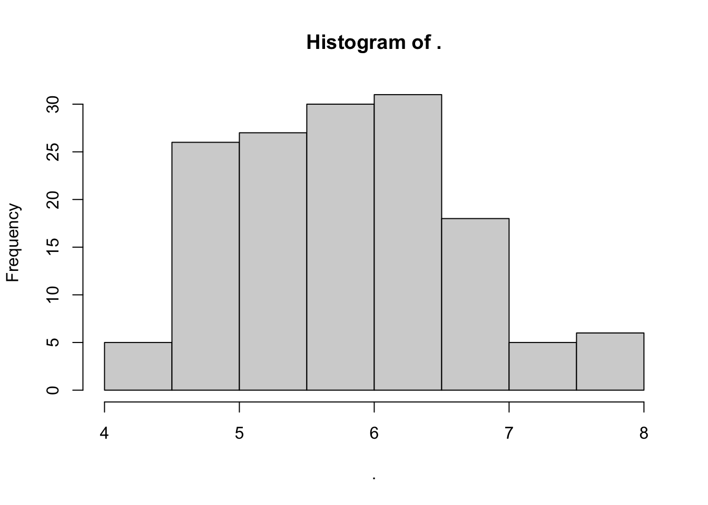

2.2 Tidyverse 1/2: functions & pipes
Goal: Understand the tidyverse framework of pipes and functions, as well as how to apply it to tidy data frame cleaning and manipulation.
2.2.1 Welcome to the tidyverse!
Tidyverse is a suite of R packages that are very useful for data science when we need to manipulate data frames and visualize data. The most important packages in tidyverse for our workshop will be dplyr and ggplot2. It builds on the base R functions and data types we’ve studied so far. It just provides a different design framework for working with data in R. The main two features of tidyverse are
- A new suite of very useful, intuitive functions
- The pipe
%>%which will allow us to go send data from one function to the next without using intermediate steps or nesting functions together
2.2.1.1 Preview: new functions in tidyverse
Let’s say we have a dataframe, df, which has the name and age (in years) of everyone in a class. We want to create a new variable of age in months. In base R, we would do it this way:
df$age_months <- df$age_years * 12
In tidyverse, we can use the function mutate() to create a new variable. As with most tidyverse functions, mutate() takes the dataset as the first argument and the operation as the second. Here the operation is to create the new variable.
mutate(df, age_months = age_years * 12)
As you will see with more complex examples, these functions can make dataset operations more readable, especially when strung together with a pipe.
2.2.1.2 Preview: the pipe in tidyverse
Recall the head() function used in the previous section. If you have a data frame, df, instead of peaking at the first few lines with head(df), you can pipe it into the head() function like this: df %>% head(). This might seem like more work than just calling the function around the data frame object, but when you need to run a bunch of functions on a data frame, it becomes much TIDIER!
In the previous example, we could call the function using a pipe like so:
df %>% mutate(age_months = age_years * 12)
Feeling motivated to accelerate data cleaning and analysis using the tidyverse?
2.2.2 Load tidyverse
Load the tidyverse library
library(tidyverse)If tidyverse is already installed, loading the library should not return an error message. It is ok if it says there are package conflicts - this happens when different packages that are loaded have functions with the same name (but probably do different things). Just take note of the conflicts. If you use those other packages/functions then you’ll have to specify which package the function you’re using comes from. For example if mutate() was also in another package, to use the tidyverse version I would write tidyr::mutate() instead of just mutate()
If loading the library returns an error message saying it’s not installed, then go to the SSRP Pre-installation guide and follow the instructions for installing tidyverse
2.2.3 How to pipe %>%
The tidyverse pipe can be used with most base R functions and with all tidyverse-specific functions, which we’ll learn more about soon. Although we’ll focus on using tidyverse pipe and functions on data frames, the pipe can also be used on vectors and even scalars.
2.2.3.0.1 Pipes with dataframes
Let’s read in the iris dataset used in the previous section. Peak at it with head() to check that the columns look intact.
# Load the dataset and peak at it with the head() function
irisz <- read.csv("data/iris.csv",
na.strings = c("", "n/a"),
stringsAsFactors = TRUE)
head(irisz)## Sepal.Length Sepal.Width Petal.Length Petal.Width Species Location
## 1 5.1 3.5 1.4 0.2 setosa Korea
## 2 4.9 3.0 1.4 0.2 setosa China
## 3 4.7 3.2 1.3 0.2 setosa Korea
## 4 4.6 3.1 1.5 0.2 setosa China
## 5 5.0 3.6 1.4 0.2 setosa China
## 6 5.4 NA 1.7 0.4 setosa CanadaNow let’s try this using the pipe %>%.
irisz %>% head()## Sepal.Length Sepal.Width Petal.Length Petal.Width Species Location
## 1 5.1 3.5 1.4 0.2 setosa Korea
## 2 4.9 3.0 1.4 0.2 setosa China
## 3 4.7 3.2 1.3 0.2 setosa Korea
## 4 4.6 3.1 1.5 0.2 setosa China
## 5 5.0 3.6 1.4 0.2 setosa China
## 6 5.4 NA 1.7 0.4 setosa CanadaPractice this with other functions we’ve used so far: summary(), unique(), str(), dim(), table(), and even hist()!. Do it with and without the pipe.
Pretty simple right?
Notice how the %>% pipe is sending the output from before it to the function after it. This %>% is similar to the | we use on the command line to send data from one operation to the next: sort data.txt | uniq -c (sort a data file and count the number of unique lines)
Pipes can string together functions
In the previous section, we learned how to read in a file with read.csv(), get unique values with unique(), and get the dimensions of a data frame with dim(). Let’s try these operations using the pipe instead of performing them as separate operations.
irisz %>%
unique() %>%
dim()## [1] 150 6Notice how each operation is on one line so it’s easy to read the sequence of operations.
Pipes with scalars
To take the square root of a number x and round it to y digits, we would use the sqrt() and round() functions
Here’s what this looks like with and without the pipe:
x = 112
y = 2
# Two steps without the pipe
z <- sqrt(x)
round(z, digits = y)## [1] 10.58# One step without the pipe
round(sqrt(x), digits = y)## [1] 10.58# One step with the pipe
sqrt(x) %>% round(digits = y)## [1] 10.58Pipes with vectors
We can apply the same piping method to vectors. Think about the vector that is the column Sepal.Length in the dataframe irisz which we have been using.
We’ll use pipes to string together the following operations starting with the vector irisz$Sepal.Length: sort it, make the values numeric, and make a histogram. (These three functions were also introduced in the previous section.)
# One step with the pipe
irisz$Sepal.Length %>%
as.numeric() %>%
sort() %>%
hist()
# One step without the pipe requires lots of parentheses
hist(sort(as.numeric(irisz$Sepal.Length)))Hopefully by now you have a sense for how the pipe in tidyverse works and how it can work with functions we already know and can be applied to data frames, vectors, and scalars. Another big contribution tidyverse makes to the data science in R is the addition of new functions!
2.2.4 Essential tidyverse functions
Let’s start with the essential functions of tidyverse. All of these are from the sub-package dplyr
select(): subset columnsfilter(): subset rows on conditionsarrange(): sort resultsmutate(): create new columns by using information from other columnsgroup_by()andsummarize(): create summary statistics on grouped datacount(): count discrete values
Reminder: if you ever want to know more about these functions, just use the help function - ? followed by the function of interest. For example: ?select
2.2.4.1 Selecting, deleting, reordering columns
Selecting columns
In base R, if we wanted to select certain columns (e.g. column names c1, c2, c6, c7) from a dataframe, df, we would do something like this: df[c("c1", "c2", "c6", "c7")]. With tidyverse, we can use the select(c1, c2, c6, c7) function (from dplyr).
Deleting columns
To delete a column, just add a - before the column name inside of select().
Reordering columns
Select can also be used to reorder columns. Just specify the order of columns in select().
Selecting and deselecting in the irisz dataset
# Let's select just the location
select(irisz, Location)
# Remove the Location column
select(irisz, -Location)Selecting multiple columns
Let’s select both the Location and Species columns and see what unique combinations are present in the dataset
unique(select(irisz, c(Location, Species)))## Location Species
## 1 Korea setosa
## 2 China setosa
## 6 Canada setosa
## 8 China <NA>
## 9 Russia setosa
## 10 Japan setosa
## 46 <NA> setosa
## 51 <NA> versicolor
## 54 USA versicolor
## 61 Canada versicolor
## 101 USA virginica
## 107 <NA> virginica
## 143 <NA> <NA># Note that the order returned is the order specified in select()
# Originally Location came after Species, but now they are reordered.We can also do this in with the pipe.
irisz %>%
select(Location, Species) %>%
unique()## Location Species
## 1 Korea setosa
## 2 China setosa
## 6 Canada setosa
## 8 China <NA>
## 9 Russia setosa
## 10 Japan setosa
## 46 <NA> setosa
## 51 <NA> versicolor
## 54 USA versicolor
## 61 Canada versicolor
## 101 USA virginica
## 107 <NA> virginica
## 143 <NA> <NA>Note that select() subsets the dataframe to the specified columns. The output is a data frame (not a vector), even if only one column is selected
What if we want to extract one column as a vector?
In base R, we would use the $ operation to select a single column as a vector. With tidyverse, we can use the pull() function (from dplyr). Notice that pull() will only accept a single column name and will return a vector
# Base R
irisz$Location
# With the pipe and tidyverse function pull()
irisz %>%
pull(Location) 2.2.4.2 Filtering dataframes
The basics of filtering data frames in tidyverse are the filter() function and boolean operators (>, <, ==) learned in section 2.4.3.
Let’s try two examples:
# Filter for Petal.Length greater than x
x = 7
irisz %>%
filter(as.numeric(Sepal.Length) > x)## Sepal.Length Sepal.Width Petal.Length Petal.Width Species Location
## 1 7.1 3.0 5.9 2.1 virginica USA
## 2 7.6 3.0 6.6 2.1 virginica USA
## 3 7.2 3.6 6.1 2.5 virginica USA
## 4 7.7 3.8 6.7 2.2 virginica USA
## 5 7.7 2.6 6.9 23.0 virginica USA
## 6 7.7 2.8 6.7 2.0 virginica USA
## 7 7.2 3.2 6.0 1.8 virginica USA
## 8 7.2 3.0 5.8 1.6 virginica USA
## 9 7.4 2.8 6.1 1.9 virginica USA
## 10 7.9 3.8 6.4 2.0 virginica USA
## 11 7.7 3.0 6.1 2.3 virginica USA# Filter to get observations of setosa species from Korea
irisz %>%
filter(Species == "setosa",
Location == "Korea")## Sepal.Length Sepal.Width Petal.Length Petal.Width Species Location
## 1 5.1 3.50 1.4 0.2 setosa Korea
## 2 4.7 3.20 1.3 0.2 setosa Korea
## 3 4.8 3.00 1.4 0.1 setosa Korea
## 4 5.4 3.90 1.3 0.4 setosa Korea
## 5 5.1 3.50 1.4 0.3 setosa Korea
## 6 5.1 3.80 1.5 0.3 setosa Korea
## 7 5.1 3.70 1.5 0.4 setosa Korea
## 8 5.5 0.35 1.3 0.2 setosa Korea
## 9 4.4 3.00 1.3 0.2 setosa Korea
## 10 NA NA 1.6 0.6 setosa Korea2.2.4.3 Creating and renaming columns
Creating columns in tidyverse is simple with the mutate() function.
Let’s say we wanted to create a new column for the irisz dataset which has the row number.
In base R, we would do something like irisz$row_number <- seq(1,nrow(irisz)). Here, seq() creates a sequence of numbers from 1 to the number of rows in irisz.
In tidyverse we can do it using the mutate() and row_number() functions. So it doesn’t output the whole data frame, we’ll pipe it directly into head()
irisz %>%
mutate(row_number = row_number()) %>%
head()## Sepal.Length Sepal.Width Petal.Length Petal.Width Species Location row_number
## 1 5.1 3.5 1.4 0.2 setosa Korea 1
## 2 4.9 3.0 1.4 0.2 setosa China 2
## 3 4.7 3.2 1.3 0.2 setosa Korea 3
## 4 4.6 3.1 1.5 0.2 setosa China 4
## 5 5.0 3.6 1.4 0.2 setosa China 5
## 6 5.4 NA 1.7 0.4 setosa Canada 6See the row number column?
Mutate can also be used to update a column without creating a new one.
# Change sepal length to be 10x what it currently is
irisz %>%
mutate(Sepal.Length = 10*Sepal.Length ) %>%
head()## Sepal.Length Sepal.Width Petal.Length Petal.Width Species Location
## 1 51 3.5 1.4 0.2 setosa Korea
## 2 49 3.0 1.4 0.2 setosa China
## 3 47 3.2 1.3 0.2 setosa Korea
## 4 46 3.1 1.5 0.2 setosa China
## 5 50 3.6 1.4 0.2 setosa China
## 6 54 NA 1.7 0.4 setosa CanadaWhat if all the setosa measurements were actually supposed to be the virginica species?
Let’s use the ifelse() function which accepts a conditional test, value if true, value if false.
irisz %>%
# If Species is setosa, change it to virginica, otherwise use the value in Species
mutate(Species = ifelse(Species == "setosa", "virginica", Species )) %>%
head()## Sepal.Length Sepal.Width Petal.Length Petal.Width Species Location
## 1 5.1 3.5 1.4 0.2 virginica Korea
## 2 4.9 3.0 1.4 0.2 virginica China
## 3 4.7 3.2 1.3 0.2 virginica Korea
## 4 4.6 3.1 1.5 0.2 virginica China
## 5 5.0 3.6 1.4 0.2 virginica China
## 6 5.4 NA 1.7 0.4 virginica CanadaRenaming columns
Sometimes, we just need to rename an existing column. Use rename() to specify the new and old column names, rename(new_name = old_name). Let’s rename the location column to be “Country”. Let’s just pipe it directly into colnames() which will give us the column names of the data frame.
irisz %>%
rename(Country = Location) %>%
colnames()## [1] "Sepal.Length" "Sepal.Width" "Petal.Length" "Petal.Width" "Species"
## [6] "Country"Want to change row names into a column or a column into a row name? Check out rownames_to_column() and column_to_rownames().
2.2.4.4 Summarizing data
Summarizing data is very important in data analysis. It allows you to get a big picture overview of a new dataset: type, range of values, etc. These are also types of summaries to think about including when in the exploratory stages or a project: before running analyses on a dataset, create a summary of the dataset. Present this during your update meetings for your summer project and keep these summaries on hand in case you or others have questions about the dataset throughout the course of your project.
For summarizing data in tidyverse, let’s explore the functions
count()group_by()summarize()
The function count() does what it sounds like - it counts the number of unique observations for the specified column(s)
Count on one variable in the data frame
irisz %>%
count(Location)## Location n
## 1 Canada 35
## 2 China 6
## 3 Japan 11
## 4 Korea 10
## 5 Russia 11
## 6 USA 63
## 7 <NA> 14Count on more than one variable in the data frame
# Count the number of observations for each combination
# of location and species
irisz %>%
count(Location, Species)## Location Species n
## 1 Canada setosa 11
## 2 Canada versicolor 24
## 3 China setosa 5
## 4 China <NA> 1
## 5 Japan setosa 11
## 6 Korea setosa 10
## 7 Russia setosa 11
## 8 USA versicolor 20
## 9 USA virginica 43
## 10 <NA> setosa 1
## 11 <NA> versicolor 6
## 12 <NA> virginica 6
## 13 <NA> <NA> 1Can you think of another (perhaps longer) way to count using other functions, such as select(), unique(), n(), pull(), or table()?
Summarizing WITHIN groups
What if we want to do more than just count the number of occurrences for a given group? group_by takes a variable and groups the data by that variable. Anything that happens after that is only calculated within the group variable. To turn off grouping, use ungroup(). It’s always good practice to ungroup() after you’re done grouping. Although it doesn’t matter if you won’t be doing any more operations on the dataset.
# Here's an example that produces a similar result
# as in the count() example above
irisz %>%
group_by(Location) %>%
summarize(n = n()) %>%
ungroup()## # A tibble: 7 × 2
## Location n
## <fct> <int>
## 1 Canada 35
## 2 China 6
## 3 Japan 11
## 4 Korea 10
## 5 Russia 11
## 6 USA 63
## 7 <NA> 14Try taking away the ungroup() and see if it changes the result.
Let’s build on this. We also want to calculate the mean() and sd() for a new variable called size for each location. Size is going to be length * width of the sepal. Our process is:
- Create a new column for size using
mutate() - Group the data by Location using
group_by() - Summarize the mean and standard deviation of the group using
summarize()
# Since mean() and sd() require numeric inputs,
# We'll also tell mean() and sd() to ignore NAs in the calculation
irisz %>%
mutate(size = as.numeric(Sepal.Length) * as.numeric(Sepal.Width)) %>%
group_by(Location) %>%
summarize(n = n(),
mean_size = mean(Petal.Length, na.rm = T),
mean_sd = sd(Petal.Length, na.rm = T)) %>%
ungroup()## # A tibble: 7 × 4
## Location n mean_size mean_sd
## <fct> <int> <dbl> <dbl>
## 1 Canada 35 3.39 1.30
## 2 China 6 1.52 0.194
## 3 Japan 11 1.43 0.205
## 4 Korea 10 1.4 0.105
## 5 Russia 11 1.48 0.218
## 6 USA 63 5.21 0.826
## 7 <NA> 14 4.51 0.990For a further challenge, let’s clean up this table. Arrange the data so the countries with largest number of observations are at the top. Also, remove observations with no location.
2.2.4.5 Recap: Tidyverse vs Base R
To review, tidyverse is just another way to code in R with new functions and a framework based on the pipe %>%. You can always use a combination of both base R functions and tidyverse functions.
There are some great resources on tidyverse functions. Here are a couple:
- Beginner’s tidyverse cheat sheet. The
dplyrsection includes the functions we focused on today. Theggplot2section is what we’ll go over in the next section. - Introduction to tidyverse includes a more comprehensive overview of tidyverse, from reading in data to applying essential functions (what we did today) to more advanced topics such as reshaping data frames.
Licensed Creative Commons Attribution-NonCommercial-ShareAlike 4.0